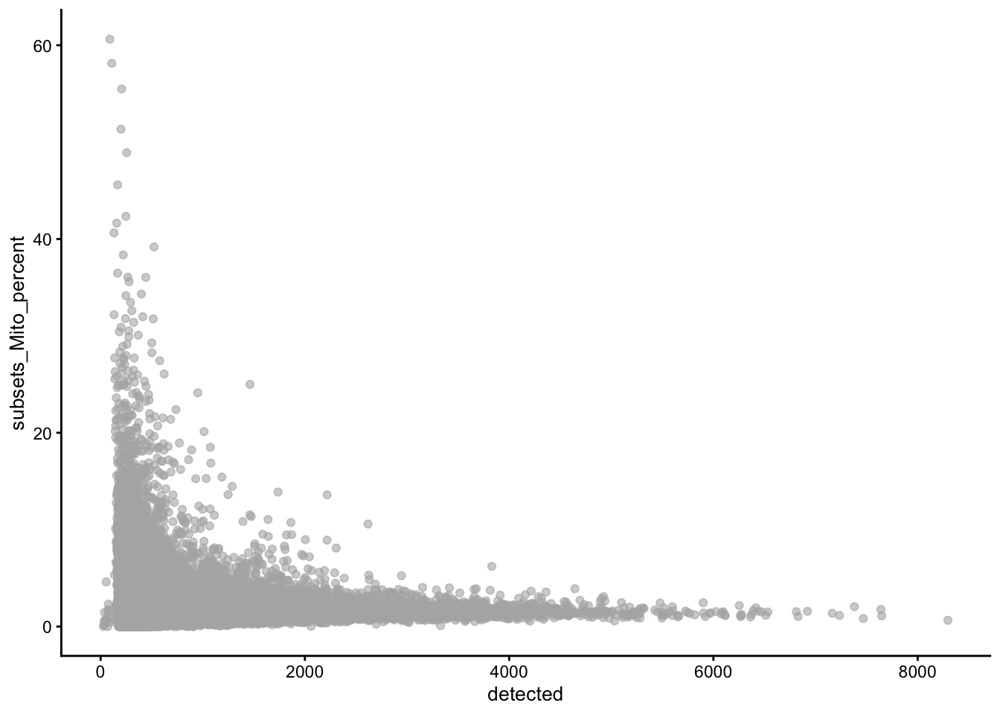
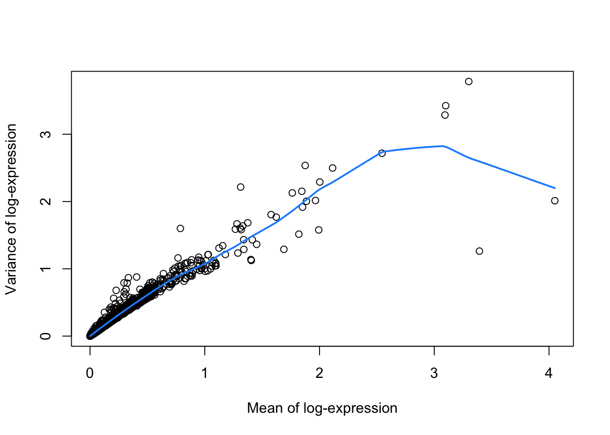

scRNA-seq workflow: Macosko et al.
Koen Van den Berge
11/16/2020
1 Import data
The scRNAseq package provides convenient access to several datasets. See the package Bioconductor page for more information.
# install BiocManager package if not installed yet.
# BiocManager is the package installer for Bioconductor software.
if (!requireNamespace("BiocManager", quietly = TRUE))
install.packages("BiocManager")
# install packages if not yet installed.
pkgs <- c("SingleCellExperiment", "DropletUtils", "scRNAseq", "scater", "scuttle", "scran", "BiocSingular", "scDblFinder", "glmpca", "uwot")
notInstalled <- pkgs[!pkgs %in% installed.packages()[,1]]
if(length(notInstalled) > 0){
BiocManager::install(notInstalled)
}## 'getOption("repos")' replaces Bioconductor standard repositories, see
## '?repositories' for details
##
## replacement repositories:
## CRAN: https://cloud.r-project.org## Bioconductor version 3.14 (BiocManager 1.30.16), R 4.1.2 (2021-11-01)## Installing package(s) 'DropletUtils', 'scater', 'scuttle', 'scran',
## 'BiocSingular', 'scDblFinder', 'glmpca', 'uwot'## also installing the dependencies 'sparseMatrixStats', 'rhdf5filters', 'R.oo', 'R.methodsS3', 'sitmo', 'RcppHNSW', 'beeswarm', 'vipor', 'DelayedMatrixStats', 'HDF5Array', 'rhdf5', 'R.utils', 'dqrng', 'beachmat', 'Rhdf5lib', 'BiocNeighbors', 'ggbeeswarm', 'viridis', 'Rtsne', 'ggrepel', 'statmod', 'bluster', 'metapod', 'ScaledMatrix', 'irlba', 'rsvd', 'xgboost', 'FNN', 'RSpectra', 'RcppAnnoy', 'RcppProgress'##
## There is a binary version available but the source version is later:
## binary source needs_compilation
## uwot 0.1.10 0.1.11 TRUE
##
##
## The downloaded binary packages are in
## /var/folders/24/8k48jl6d249_n_qfxwsl6xvm0000gn/T//RtmpRq735B/downloaded_packages## installing the source package 'uwot'# Code below might ask you to create an ExperimentHub directory.
# Type 'yes' and hit Enter, to allow this.
suppressPackageStartupMessages(library(scRNAseq))
sce <- MacoskoRetinaData()## snapshotDate(): 2021-10-19## see ?scRNAseq and browseVignettes('scRNAseq') for documentation## loading from cache## see ?scRNAseq and browseVignettes('scRNAseq') for documentation## loading from cache2 A SingleCellExperiment object
## class: SingleCellExperiment
## dim: 24658 49300
## metadata(0):
## assays(1): counts
## rownames(24658): KITL TMTC3 ... 1110059M19RIK GM20861
## rowData names(0):
## colnames(49300): r1_GGCCGCAGTCCG r1_CTTGTGCGGGAA ... p1_TAACGCGCTCCT
## p1_ATTCTTGTTCTT
## colData names(2): cell.id cluster
## reducedDimNames(0):
## mainExpName: NULL
## altExpNames(0):2.1 Accessing data from a SingleCellExperiment object
Please see Figure 4.1 in OSCA for an overview of a SingleCellExperiment object.
## List of length 1
## names(1): counts## 5 x 5 sparse Matrix of class "dgCMatrix"
## r1_GGCCGCAGTCCG r1_CTTGTGCGGGAA r1_GCGCAACTGCTC r1_GATTGGGAGGCA
## KITL . . 1 .
## TMTC3 3 . . .
## CEP290 1 3 . 2
## 4930430F08RIK 2 1 2 .
## 1700017N19RIK . . . .
## r1_CCTCCTAGTTGG
## KITL .
## TMTC3 2
## CEP290 1
## 4930430F08RIK 1
## 1700017N19RIK .## DataFrame with 24658 rows and 0 columns## DataFrame with 49300 rows and 2 columns
## cell.id cluster
## <character> <integer>
## r1_GGCCGCAGTCCG r1_GGCCGCAGTCCG 2
## r1_CTTGTGCGGGAA r1_CTTGTGCGGGAA 2
## r1_GCGCAACTGCTC r1_GCGCAACTGCTC 2
## r1_GATTGGGAGGCA r1_GATTGGGAGGCA 2
## r1_CCTCCTAGTTGG r1_CCTCCTAGTTGG NA
## ... ... ...
## p1_TCAAAAGCCGGG p1_TCAAAAGCCGGG 24
## p1_ATTAAGTTCCAA p1_ATTAAGTTCCAA 34
## p1_CTGTCTGAGACC p1_CTGTCTGAGACC 2
## p1_TAACGCGCTCCT p1_TAACGCGCTCCT 24
## p1_ATTCTTGTTCTT p1_ATTCTTGTTCTT 24## List of length 0
## names(0):2.2 Creating a new SingleCellExperiment object
## class: SingleCellExperiment
## dim: 24658 49300
## metadata(0):
## assays(1): counts
## rownames(24658): KITL TMTC3 ... 1110059M19RIK GM20861
## rowData names(0):
## colnames(49300): r1_GGCCGCAGTCCG r1_CTTGTGCGGGAA ... p1_TAACGCGCTCCT
## p1_ATTCTTGTTCTT
## colData names(0):
## reducedDimNames(0):
## mainExpName: NULL
## altExpNames(0):2.3 Storing (meta)data in a SingleCellExperiment object
fakeGeneNames <- paste0("gene", 1:nrow(sce))
rowData(sce)$fakeName <- fakeGeneNames
head(rowData(sce))## DataFrame with 6 rows and 1 column
## fakeName
## <character>
## KITL gene1
## TMTC3 gene2
## CEP290 gene3
## 4930430F08RIK gene4
## 1700017N19RIK gene5
## MGAT4C gene6# Remove again by setting to NULL
rowData(sce)$fakeName <- NULL
assays(sce)$logCounts <- log1p(assays(sce)$counts)
assays(sce)## List of length 2
## names(2): counts logCounts## 5 x 5 sparse Matrix of class "dgCMatrix"
## r1_GGCCGCAGTCCG r1_CTTGTGCGGGAA r1_GCGCAACTGCTC r1_GATTGGGAGGCA
## KITL . . 0.6931472 .
## TMTC3 1.3862944 . . .
## CEP290 0.6931472 1.3862944 . 1.098612
## 4930430F08RIK 1.0986123 0.6931472 1.0986123 .
## 1700017N19RIK . . . .
## r1_CCTCCTAGTTGG
## KITL .
## TMTC3 1.0986123
## CEP290 0.6931472
## 4930430F08RIK 0.6931472
## 1700017N19RIK .3 Filtering non-informative genes
## keep
## FALSE TRUE
## 6771 178874 Quality control
4.1 Calculate QC variables
## Loading required package: scuttle## Loading required package: ggplot2## [1] 28df <- perCellQCMetrics(sce, subsets=list(Mito=is.mito))
## add the QC variables to sce object
colData(sce) <- cbind(colData(sce), df)
# the QC variables have now been added to the colData of our SCE object.
colData(sce)## DataFrame with 49300 rows and 8 columns
## cell.id cluster sum detected subsets_Mito_sum
## <character> <integer> <numeric> <integer> <numeric>
## r1_GGCCGCAGTCCG r1_GGCCGCAGTCCG 2 37478 7235 427
## r1_CTTGTGCGGGAA r1_CTTGTGCGGGAA 2 32034 6921 503
## r1_GCGCAACTGCTC r1_GCGCAACTGCTC 2 28140 6390 460
## r1_GATTGGGAGGCA r1_GATTGGGAGGCA 2 20352 5727 326
## r1_CCTCCTAGTTGG r1_CCTCCTAGTTGG NA 19550 5769 264
## ... ... ... ... ... ...
## p1_TCAAAAGCCGGG p1_TCAAAAGCCGGG 24 817 537 13
## p1_ATTAAGTTCCAA p1_ATTAAGTTCCAA 34 817 574 10
## p1_CTGTCTGAGACC p1_CTGTCTGAGACC 2 816 636 24
## p1_TAACGCGCTCCT p1_TAACGCGCTCCT 24 816 488 27
## p1_ATTCTTGTTCTT p1_ATTCTTGTTCTT 24 816 484 16
## subsets_Mito_detected subsets_Mito_percent total
## <integer> <numeric> <numeric>
## r1_GGCCGCAGTCCG 14 1.13934 37478
## r1_CTTGTGCGGGAA 15 1.57021 32034
## r1_GCGCAACTGCTC 13 1.63468 28140
## r1_GATTGGGAGGCA 11 1.60181 20352
## r1_CCTCCTAGTTGG 9 1.35038 19550
## ... ... ... ...
## p1_TCAAAAGCCGGG 4 1.59119 817
## p1_ATTAAGTTCCAA 5 1.22399 817
## p1_CTGTCTGAGACC 7 2.94118 816
## p1_TAACGCGCTCCT 5 3.30882 816
## p1_ATTCTTGTTCTT 4 1.96078 8164.2 EDA
High-quality cells should have many features expressed, and a low contribution of mitochondrial genes. Here, we see that several cells have a very low number of expressed genes, and where most of the molecules are derived from mitochondrial genes. This indicates likely damaged cells, presumably because of loss of cytoplasmic RNA from perforated cells, so we’d want to remove these for the downstream analysis.

4.3 QC using adaptive thresholds
Below, we remove cells that are outlying with respect to
- A low sequencing depth (number of UMIs);
- A low number of genes detected;
- A high percentage of reads from mitochondrial genes.
We remove a total of \(3423\) cells, most of which because of an outlyingly high percentage of reads from mitochondrial genes.
lowLib <- isOutlier(df$sum, type="lower", log=TRUE)
lowFeatures <- isOutlier(df$detected, type="lower", log=TRUE)
highMito <- isOutlier(df$subsets_Mito_percent, type="higher")
table(lowLib)## lowLib
## FALSE
## 49300## lowFeatures
## FALSE TRUE
## 49287 13## highMito
## FALSE TRUE
## 45890 3410## discardCells
## FALSE TRUE
## 45877 34234.4 Identifying and removing empty droplets
Note that the removal of cells with low sequencing depth using the adaptive threshold procedure above is a way of removing empty droplets. Other approaches are possible, e.g., removing cells by statistical testing using emtpyDrops. This does require us to specify a lower bound on the total number of UMIs, below which all cells are considered to correspond to empty droplets. This lower bound may not be trivial to derive, but the barcodeRanks function can be useful to identify an elbow/knee point.
library(DropletUtils)
bcrank <- barcodeRanks(counts(sce))
# Only showing unique points for plotting speed.
uniq <- !duplicated(bcrank$rank)
plot(bcrank$rank[uniq], bcrank$total[uniq], log="xy",
xlab="Rank", ylab="Total UMI count", cex.lab=1.2)
abline(h=metadata(bcrank)$inflection, col="darkgreen", lty=2)
abline(h=metadata(bcrank)$knee, col="dodgerblue", lty=2)
abline(h=350, col="orange", lty=2) # picked visually myself
legend("topright", legend=c("Inflection", "Knee", "Empirical knee point"),
col=c("darkgreen", "dodgerblue", "orange"), lty=2, cex=1.2)
## Warning in smooth.spline(x[new.keep], y[new.keep], df = df, ...): not using
## invalid df; must have 1 < df <= n := #{unique x} = 9# p-values for cells with total UMI count under the lower bound.
hist(all.out$PValue[all.out$Total <= limit & all.out$Total > 0],
xlab="P-value", main="", col="grey80")## [1] 250804.5 Identifying and removing doublets
We will use scDblFinder to detect doublet cells.
## perform doublet detection
library(scDblFinder)
set.seed(211103)
sampleID <- unlist(lapply(strsplit(colData(sce)$cell.id, split="_"), "[[", 1))
table(sampleID)## sampleID
## p1 r1 r2 r3 r4 r5 r6
## 3942 5953 8414 5319 7015 7487 7747sce <- scDblFinder(sce, returnType="table",
samples = factor(sampleID))
table(sce$scDblFinder.class)##
## singlet doublet
## 41220 4657## visualize these scores
## explore doublet score wrt original cluster labels
boxplot(log1p(sce$scDblFinder.score) ~ factor(colData(sce)$cluster, exclude=NULL))##
## 1 2 3 4 5 6 7 8 9 10 11
## singlet 213 370 253 63 69 177 264 141 305 165 180
## doublet 2 7 22 9 5 28 53 8 32 24 27
##
## 12 13 14 15 16 17 18 19 20 21 22
## singlet 211 47 85 51 196 304 65 111 318 172 201
## doublet 43 3 23 21 55 67 15 14 64 75 60
##
## 23 24 25 26 27 28 29 30 31 32 33
## singlet 216 25026 1604 1932 472 357 464 517 412 266 658
## doublet 43 1917 169 229 157 124 117 113 90 52 155
##
## 34 35 36 37 38 39 <NA>
## singlet 1431 36 42 231 56 64 3475
## doublet 133 7 3 9 3 2 677##
## 1 2 3 4 5
## singlet 0.990697674 0.981432361 0.920000000 0.875000000 0.932432432
## doublet 0.009302326 0.018567639 0.080000000 0.125000000 0.067567568
##
## 6 7 8 9 10
## singlet 0.863414634 0.832807571 0.946308725 0.905044510 0.873015873
## doublet 0.136585366 0.167192429 0.053691275 0.094955490 0.126984127
##
## 11 12 13 14 15
## singlet 0.869565217 0.830708661 0.940000000 0.787037037 0.708333333
## doublet 0.130434783 0.169291339 0.060000000 0.212962963 0.291666667
##
## 16 17 18 19 20
## singlet 0.780876494 0.819407008 0.812500000 0.888000000 0.832460733
## doublet 0.219123506 0.180592992 0.187500000 0.112000000 0.167539267
##
## 21 22 23 24 25
## singlet 0.696356275 0.770114943 0.833976834 0.928849794 0.904681331
## doublet 0.303643725 0.229885057 0.166023166 0.071150206 0.095318669
##
## 26 27 28 29 30
## singlet 0.894030541 0.750397456 0.742203742 0.798623064 0.820634921
## doublet 0.105969459 0.249602544 0.257796258 0.201376936 0.179365079
##
## 31 32 33 34 35
## singlet 0.820717131 0.836477987 0.809348093 0.914961637 0.837209302
## doublet 0.179282869 0.163522013 0.190651907 0.085038363 0.162790698
##
## 36 37 38 39 <NA>
## singlet 0.933333333 0.962500000 0.949152542 0.969696970 0.836946050
## doublet 0.066666667 0.037500000 0.050847458 0.030303030 0.1630539505 Normalization
For normalization, the size factors \(s_i\) computed here are simply scaled library sizes: \[ N_i = \sum_g Y_{gi} \] \[ s_i = N_i / \bar{N}_i \]
sce <- logNormCounts(sce)
# note we also returned log counts: see the additional logcounts assay.
sce## class: SingleCellExperiment
## dim: 17887 41220
## metadata(0):
## assays(2): counts logcounts
## rownames(17887): KITL TMTC3 ... GM16012 GM21464
## rowData names(0):
## colnames(41220): r1_GGCCGCAGTCCG r1_CTTGTGCGGGAA ... p1_TAACGCGCTCCT
## p1_ATTCTTGTTCTT
## colData names(15): cell.id cluster ... scDblFinder.cxds_score
## sizeFactor
## reducedDimNames(0):
## mainExpName: NULL
## altExpNames(0):# you can extract size factors using
sf <- librarySizeFactors(sce)
mean(sf) # equal to 1 due to scaling.## [1] 1
6 Feature selection
library(scran)
dec <- modelGeneVar(sce)
fitRetina <- metadata(dec)
plot(fitRetina$mean, fitRetina$var,
xlab="Mean of log-expression",
ylab="Variance of log-expression")
curve(fitRetina$trend(x), col="dodgerblue", add=TRUE, lwd=2)
## [1] "RHO" "CALM1" "MEG3" "GNGT1" "RPGRIP1" "SAG"# plot these
plot(fitRetina$mean, fitRetina$var,
col = c("orange", "darkseagreen3")[(names(fitRetina$mean) %in% hvg)+1],
xlab="Mean of log-expression",
ylab="Variance of log-expression")
curve(fitRetina$trend(x), col="dodgerblue", add=TRUE, lwd=2)
legend("topleft",
legend = c("Selected", "Not selected"),
col = c("darkseagreen3", "orange"),
pch = 16,
bty='n')7 Dimensionality reduction
Note that, below, we color the cells using the known, true cell type label as defined in the metadata, to empirically evaluate the dimensionality reduction. In reality, we don’t know this yet at this stage.
7.1 The most basic DR
Just by looking at the top two genes based on our feature selection criterion, we can already see some separation according to the cell type!
colData(sce)$cluster <- as.factor(colData(sce)$cluster)
cl <- colData(sce)$cluster
par(bty='l')
plot(x = assays(sce)$counts[hvg[1],],
y = assays(sce)$counts[hvg[2],],
col = as.numeric(cl),
pch = 16, cex = 1/3,
xlab = "Most informative gene",
ylab = "Second most informative gene",
main = "Cells colored acc to cell type")7.2 Linear dimensionality reduction: PCA
We are able to recover quite some structure. However, many cell populations remain obscure, and the plot is overcrowded.
set.seed(1234)
sce <- runPCA(sce, ncomponents=30, subset_row=hvg)
plotPCA(sce, colour_by = "cluster")## Warning: Removed 3475 rows containing missing values (geom_point).7.3 A generalization of PCA for exponential family distributions.
library(glmpca)
set.seed(211103)
poipca <- glmpca(assays(sce)$counts[hvg,],
L=2, fam="poi",
minibatch="stochastic")
reducedDim(sce, "PoiPCA") <- poipca$factors
plotReducedDim(sce,
dimred="PoiPCA",
colour_by = "cluster")## Warning: Removed 3475 rows containing missing values (geom_point).